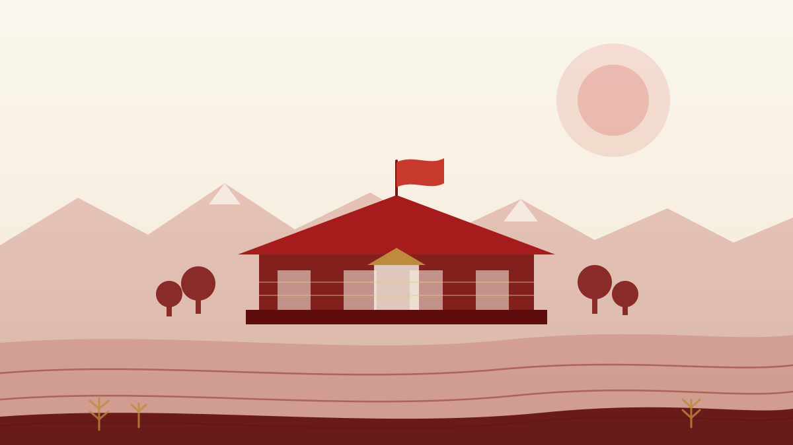

1949.10.01 · 国校同庆
三周年校庆与开国大典同日
1949 年 10 月 1 日，学校三周年校庆与中华人民共和国开国大典同日举行，师生以“国校同庆”为主题，活动持续 4 天，并向市民公演话剧、评剧、歌舞与电影。

壹 · 起点
甘肃农业大学的办学起点，是 1946 年在兰州创建的国立兽医学院——当时国内独立设置的兽医学院。学校首任院长是著名兽医学家、微生物学家盛彤笙。从最初的一间学院开始，这所学校就把自己的命运，系在了西北的土地与牲畜、粮食与农人身上。
那是一个百废待兴的年代。仪器匮乏、教材短缺、交通不便，师生们用最朴素的方式做研究：一间实验室、一片试验田、一本本手抄的笔记。正是这种“从土地上找答案”的传统，成为后来农大人最珍视的底色。
贰 · 迁徙与扎根
从兰州出发，学校曾在河西走廊的武威黄羊镇办学近三十年，把课堂、实验室和试验田一起搬到了更干旱、更艰苦的地方；1981 年国务院批准迁校，1986 年迁回兰州。校址几经迁徙，服务西北的方向没有变过。
1946
兰州 · 小西湖
前身国立兽医学院创建，是我国第一所独立设置的兽医学院，开启西北高等农业教育的先声。
1958
武威 · 黄羊镇
学校迁入河西走廊的黄羊镇办学，在这里度过了近三十年，把学问扎进旱区与牧区。
1981 → 1986
兰州 · 安宁区营门滩
1981 年 12 月国务院批准迁回兰州，1984 年营门滩迁建工程动工，1986 年 9 月迁回后首届新生开学。
叁 · 大事记
把校史摊成一条时间轴，会发现它很少谈论自己，更多谈的是土地、牲畜、种子和人。
1946.10
前身国立兽医学院在兰州创建，是我国第一所独立设置的兽医学院，由盛彤笙先生筹建并任首任院长。1946 年 11 月 16 日首届 48 名新生开课，1947 年 1 月正式成立。
1950 — 1951
学校先后更名为西北兽医学院（1950 年 12 月）、西北畜牧兽医学院（1951 年底），在调整中积蓄力量，面向西北的畜牧兽医教育格局逐步成形。
1958.12
1958 年 12 月 15 日，甘肃农业大学成立大会在武威黄羊镇召开。学校在河西走廊办学近三十年，把课堂、实验室与试验田一起搬到了旱区一线。
1981 — 1986
1981 年 12 月 12 日，国务院批准学校迁回兰州市办学；1984 年 10 月迁建工程在营门滩破土动工；1986 年 9 月 12 日，迁回兰州后的首届新生开学典礼举行。
新时代
学校现有草学国家重点学科，草学入选甘肃省属高校国家“一流学科”突破工程，农业科学、植物与动物科学等学科进入 ESI 全球前 1%，以强农兴农为己任，服务陇原乡村振兴。
叁 · 几个瞬间
大历史落在具体的学校身上，往往是一些很朴素的场景：一场与开国大典同日的校庆、一位来视察的长者、一批背着行李去牧区的学生。
1949.10.01 · 国校同庆
1949 年 10 月 1 日，学校三周年校庆与中华人民共和国开国大典同日举行，师生以“国校同庆”为主题，活动持续 4 天，并向市民公演话剧、评剧、歌舞与电影。
1949 · 获得新生
兰州解放后，学校由军代表辛安亭（后任甘肃省文教厅厅长）接收；国家调拨上海、重庆等地的仪器药品回兰，到 1953 年校园面积扩至 175 亩。
1951.08.28 · “大西北的瑰宝”
1951 年 8 月 28 日，西北军政委员会副主席习仲勋来院视察，称赞国立兽医学院是“大西北的瑰宝”，希望学校为开发大西北畜牧业培养更多人才。
1952—1956 · 支援边疆
1952 年学校办畜牧兽医初级民族班（60 人）；1956 年受阿沛·阿旺晋美委托举办三年制藏训班，累计培养 200 多人，西藏自治区数任畜牧厅厅长出自该班。
1949 年冬起 · 防疫训练班
1949 年冬起，学校连续举办 4 期防疫人员训练班，共 219 人，对防治牛瘟、口蹄疫等烈性传染病起了重要作用——这是建校初期最直接的“为国为民”。
校训与精神
校训“敦品励学 笃志允能”，校风“勤奋 严谨 求实 创新”，甘农精神“自强不息、奋发有为”；办学初心是“臻进人类健康、裨益国民生计”。
本页校史内容依据甘肃农业大学官网“校史总览”“学校简介”“校训校风”等公开页面整理。
肆 · 田野上的论文
对农大人来说，“红色基因”不是一句口号，而是一种非常具体的工作方式：到土地上去，把问题带回来，再把答案种回去。甘肃的干旱、风沙、盐碱与高寒，是这里最难缠的“对手”，也是这里最实在的“课堂”。
伍 · 新时代的使命
它落在三件很朴素的事情上：让土地有更好的收成，让乡村有更多的人，让专业有更实的用处。
01 / 土地
面向甘肃干旱半干旱区的现实条件，做品种、做技术、做推广，把“靠天吃饭”一点点变成“靠技术吃饭”。
02 / 乡村
培养愿意留下来的农业人才，让年轻人看到乡村的可能性，也让乡村看到年轻人的样子。
03 / 专业
把课堂上学到的知识，变成田间地头、畜舍草原、乡村课堂里能用的办法。
陆 · 青年的去向
每一代农大人都要回答这个问题。有人去了牧场，有人去了县里的农技站，有人回到家乡的合作社，有人继续做研究。答案各不相同，但方向是一致的：把学到的东西，交还给这片土地。
"到基层去，到土地上，到农民中间去。" —— 农大毕业生最常听到的一句话
"强农兴农不是口号，是把论文写在田野上的每一天。" —— 本站编写组对校史的理解注：本页校史内容依据公开资料整理；涉及具体年份、人物与事件的表述，以学校官方校史资料为准。本站为参赛作品，如有疏漏欢迎指正。